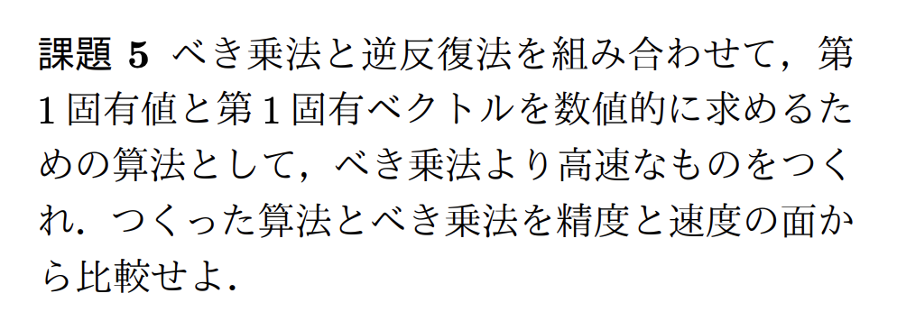
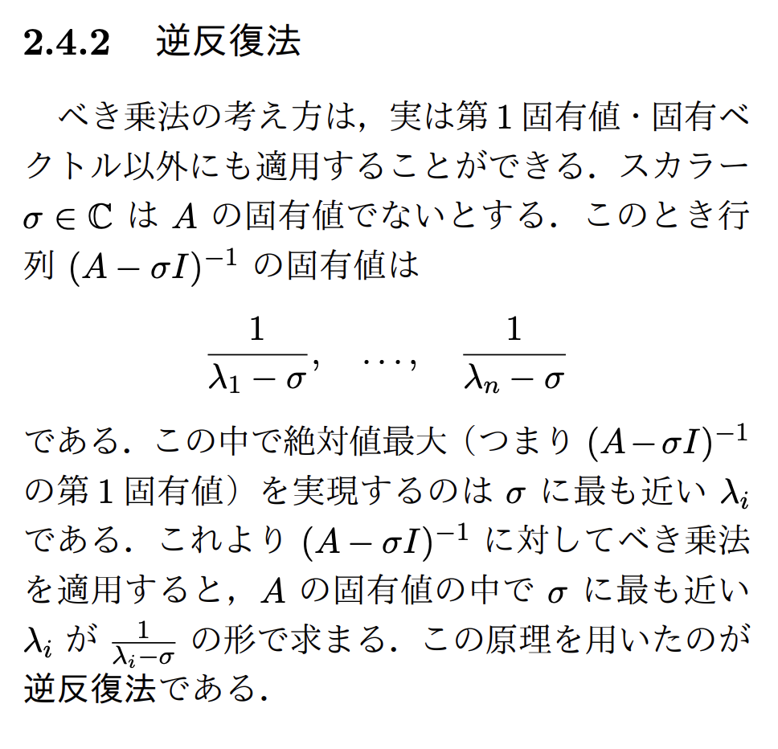
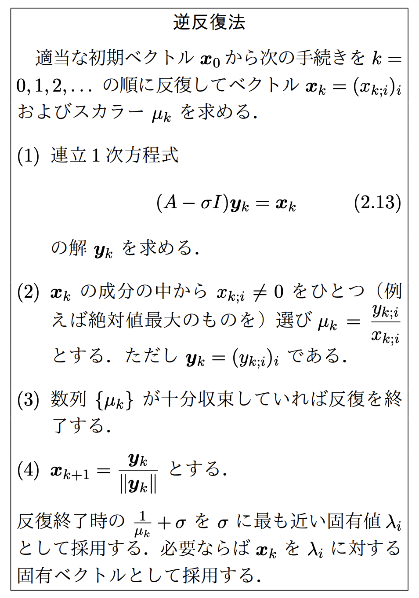
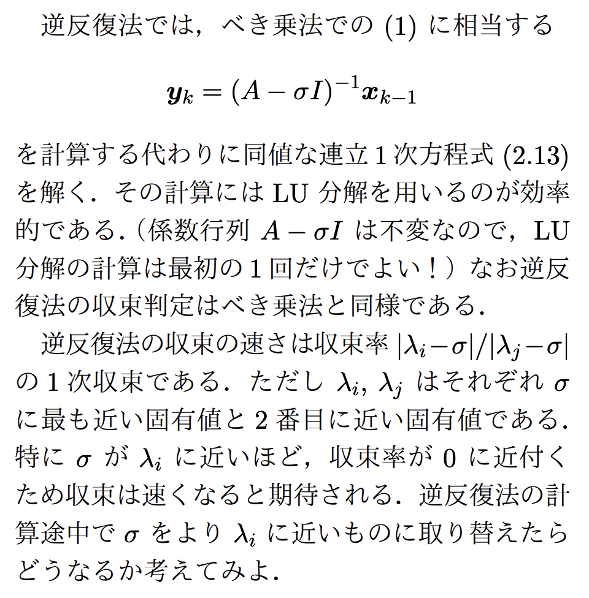

2026年度後期 · 数理工学実験 · 第5回
実対称行列の作り方
第5回｜実対称行列の生成・課題5・逆反復法
べき乗法・QR法を実験するときは、ランダムな実行列 A から B = A + Aᵀ を作り、B を入力にする。Pythonの二重リストなら、転置側の成分は A[j][i] と書ける。
1．そのまま実行できる最小例
追加ライブラリは不要。n が行列のサイズで、各成分を0以上1未満の乱数で作る。
import random
random.seed(0) # 同じ行列で実験を再現する
n = 3
# ランダムな実行列
A = [[random.random() for j in range(n)] for i in range(n)]
# B = A + A^T：新しい行列として作る
B = [[A[i][j] + A[j][i] for j in range(n)] for i in range(n)]
for row in B:
print([round(value, 3) for value in row])
print("対称か:", all(B[i][j] == B[j][i]
for i in range(n) for j in range(n)))B[i][j] = A[i][j] + A[j][i] なので、添字を入れ替えても B[j][i] = A[j][i] + A[i][j] と同じ値になる。これが対称行列になる理由。対角成分は 2 * A[i][i] になる。
元の A をループ中に書き換えると、後の計算で変更済みの成分を使ってしまう。上のように別の行列 B を作ればよい。
2．既存の実験コードで使う
section2 内のコードでは、行列を生成した直後に対称化する。べき乗法への入力は次のように変えられる。
import utils_math
n = 50
A = utils_math.make_square_matrix(n)
B = [[A[i][j] + A[j][i] for j in range(n)] for i in range(n)]
# 現在の power_method の返り値は3個
mu, x, iteration_num = utils_math.power_method(B)
print(mu, iteration_num)QR法でも同様に、元の A の代わりに B を渡す。両手法の結果を比較する場合は同じ B を使い、入力を書き換える実装には [row[:] for row in B] で行までコピーして渡す。
3．なぜ対称にするのか
実行列に非実の固有値 a + bi があれば、共役な a − bi も固有値になり、両者の絶対値は等しい。これが、教材の「固有値の絶対値がすべて相異なる」という条件に反する。
実対称行列の固有値はすべて実数なので、この複素共役対の問題を避けられる。ただし、対称にするだけで収束条件がすべて満たされるわけではない。例えば対角成分が 1, −1 の対称行列は、固有値の絶対値が等しい。
べき乗法では、絶対値が最大の固有値が一つに定まり、その固有方向が初期ベクトルに含まれることが基本条件。最大固有値が負の場合はベクトルの符号が交互に変わるため、方向や残差で収束を確認する。QR法ではここで、シフトなし反復で対角化を目指す教材の設定を考えている。
現在の utils_math.power_method はノルムの比で固有値を推定するため、符号を区別できない。上の0以上の乱数を使う例に合わせた使用例であり、負の固有値も扱うよう一般化するときは、固有値の推定と収束判定も見直す。
教材 p.30 課題5 · 解き方と実装の補助

まずべき乗法で「狙う固有値がどの辺にあるか」を調べ、次に逆反復法で、その固有値に対応する方向へ素早く近づける。課題5では、この2段階の方法を作り、べき乗法だけの場合と精度・計算時間を比べる。
以下では、2×2行列を手で計算しながら仕組みを確認する。説明用の例では正解がわかっているが、実際のプログラムでは正解を使わず、反復の途中で得た近似値を使う。解説1・2の読了目安：約10〜12分（手計算を除く）
原典：p.30 課題5、p.24 べき乗法、p.26 逆反復法。レイリー商や切替条件は、2手法を比較しやすくするための補助案。
1．小さな行列で、2つの方法の役割をつかむ
まず何を求めたいのか
固有値・固有ベクトルとは、行列を掛けても向きが同じ直線上に残り、倍率だけが変わる組のこと。式では \(Av=\lambda v\) と書く。\(v\) がゼロでない固有ベクトル、\(\lambda\) がその倍率である固有値。教材の「第1」は、固有値の絶対値が最大のものを指す。
この例の正解は、第1固有値が3、第1固有ベクトルの方向が \((1,0)^{\mathsf T}\)。上付きの \(\mathsf T\) は縦ベクトルにする記号。\((2,0)^{\mathsf T}\) も同じ固有方向なので、答えるときは長さをそろえる。
べき乗法：行列を掛けると、3倍される方向が少しずつ勝つ
初期ベクトルを \(x_0=(1,1)^{\mathsf T}\) とする。1回掛けると \(Ax_0=(3,2)^{\mathsf T}\)。このまま掛け続けると値が大きくなるので、全成分を最大の絶対値3で割り、\(x_1=(1,2/3)^{\mathsf T}\) とする。これを正規化と呼ぶ。全体を同じ数で割るため、方向は変わらない。
| 回数 | 正規化したベクトル | 消したい第2成分 |
|---|---|---|
| 開始 | \((1,1)^{\mathsf T}\) | 1 |
| 1回 | \((1,2/3)^{\mathsf T}\) | 約0.6667 |
| 2回 | \((1,(2/3)^2)^{\mathsf T}\) | 約0.4444 |
| 3回 | \((1,(2/3)^3)^{\mathsf T}\) | 約0.2963 |
目標の \((1,0)^{\mathsf T}\) に近づいている。毎回、第2成分は前の 2/3倍になる。これがべき乗法の基本的な仕組みである。
では、固有値が3と2でなく10と9.9だったらどうか。同じ計算で、消したい成分は毎回 \(9.9/10=0.99\) 倍にしかならない。100回繰り返しても \(0.99^{100}\approx0.366\)。このように、最大の固有値と次の固有値の絶対値が近いと、べき乗法は遅くなる。
逆反復法：目標に近い数を選び、その方向を強く増幅する
元の3と2の例に戻る。3に近い数として、ひとまず 2.9 を選ぶ。この選んだ数をシフトと呼び、\(\sigma\)（シグマ）で表す。まず \(A\) の対角成分から2.9を引く。
\(I\) は対角成分が1、他が0の単位行列。だから \(A-\sigma I\) は「全成分から引く」操作ではなく、対角成分だけから \(\sigma\) を引く操作になる。
逆反復法では、今のベクトルを \(x\) として、次の方程式を \(y\) について解く。
例えば \(x=(1,0.3)^{\mathsf T}\) まで近づいたところで切り替えると、解く方程式は次の2本になる。
最後は最大絶対値10で割って正規化した。消したい成分は 0.3から約−0.0333へ、絶対値で1/9倍になった。べき乗法の2/3倍より、一気に小さくなる。負号は第2成分の向きが反転しただけで、目標への近さを見るときは絶対値で比べればよい。
理由は、方程式を解く操作が、第1成分を \(1/(3-2.9)=10\) 倍、第2成分を \(1/(2-2.9)=-10/9\) 倍するから。正規化した後の第2成分の倍率は \((-10/9)/10=-1/9\) となる。シフトに近い固有値ほど、引き算の後の値が小さく、逆数の絶対値が大きくなるのがポイント。
同じ途中結果から、その後の3回を比べる
べき乗法を3回行った \(x=(1,8/27)^{\mathsf T}\) から出発する。右の方法は、説明用にシフトを2.9に固定したもの。
| 追加した回数 | べき乗法の第2成分 | 逆反復法の第2成分 |
|---|---|---|
| 切替前 | 0.296296 | 0.296296 |
| 1回 | 0.197531 | −0.032922 |
| 2回 | 0.131687 | 0.003658 |
| 3回 | 0.087791 | −0.000406 |
どちらも第1成分を1にそろえているので、第2成分の絶対値がそのまま、正解 \((1,0)^{\mathsf T}\) との差になる。逆反復法で仕上げると、少ない反復で方向がそろうことが見える。ただし、1回にかかる時間は同じではないので、最終的には実行時間も測る。
でも、正解が未知なのに、なぜ2.9を選べるのか
ここを、最初のべき乗法に任せる。近似ベクトル \(x\) が得られたら、そこから固有値の近似値を計算し、それをシフトにする。その計算が次の節のレイリー商である。
逆反復法だけを適当なシフトから始めると、別の固有値を求めることがある。この例で \(\sigma=2.1\) を選ぶと、3より2に近いため、第2固有値2の方向が強く増幅される。べき乗法は狙う固有値の近くまで案内し、逆反復法はその近くで精度を上げる。これが組み合わせる理由である。
一般の行列でも同じことが起きる理由と、収束率の式
対角行列以外でも、固有ベクトル \(v_i\) は \(Av_i=\lambda_i v_i\) を満たす。したがって \((A-\sigma I)v_i=(\lambda_i-\sigma)v_i\)。逆の操作では同じ固有方向が \(1/(\lambda_i-\sigma)\) 倍される。座標の第1・第2成分の代わりに、各固有方向の成分で考えれば、上の例と同じである。ここでは実対称行列を扱い、絶対値最大の固有値が一つで、初期ベクトルにその固有方向が含まれるとする。
この比は、目標以外の成分が目標成分に比べてどれだけ残るかを表す。小さいほど速い。逆反復側の式は、\(\sigma\) に最も近い固有値が \(\lambda_1\) の場合のもの。
2．実際のプログラムで必要な3つの判断
① 近似ベクトルから、固有値をどう見積もるか
もし \(x\) が正確な固有ベクトルなら \(Ax=\lambda x\)。両辺に左から \(x^{\mathsf T}\) を掛けて割ると、\(\lambda=(x^{\mathsf T}Ax)/(x^{\mathsf T}x)\) となる。まだ正確でない \(x\) にもこの式を使い、固有値を見積もる。これをレイリー商と呼ぶ。
ハット付きの \(\widehat\lambda\) は「近似値」を表す。第2成分 \(r\) が0へ近づくと、この値は3に近づく。上のべき乗法3回後なら \(r=8/27\) なので、\(\widehat\lambda\approx2.9193\)。この値をそのまま \(\sigma\) にすれば、正解の3を知らずに逆反復法へ進める。前節の2.9は手計算用の値で、コードでは丸めずに使う。
② いつ切り替え、いつ終了するか
近似値がどれくらい固有方程式を満たしているかは、残差で調べる。\(Ax\) と \(\widehat\lambda x\) を計算し、その差を見る。完全に一致すれば残差は0である。
\(\|\cdot\|_\infty\) は「成分の絶対値の最大」。例えば \(x=(1,0.1)^{\mathsf T}\) なら、\(\widehat\lambda\approx2.9901\)、\(Ax=(3,0.2)^{\mathsf T}\)、\(\widehat\lambda x\approx(2.9901,0.2990)^{\mathsf T}\)。差は約 \((0.0099,-0.0990)^{\mathsf T}\) で、残差は約0.0990となる。
コードでは、行列全体の倍率が違っても基準をそろえやすいよう、残差を次の量で割る。\(x\) は最大絶対値1に正規化しておく。
\(\eta\) はイータと読み、小さいほど固有方程式によく合っている。行列の \(\|A\|_\infty\) は各行の絶対値の和を計算し、その最大を取ったもの。上の対角行列では3である。コードでは \(\eta\) に対して、2種類の基準を設ける。
- 切替基準
switch_tol：例えば1e-3（0.001）より小さくなったら、べき乗法から逆反復法へ進む。 - 終了基準
tol：例えば1e-10（0.0000000001）より小さくなったら、答えとして採用する。
前節の「べき乗法3回で切替」は仕組みを見るための例。実装では回数を3に固定せず、この基準で切り替える。両手法の最終終了基準は同じにして、同程度に方程式を満たすまでの時間を比較する。
残差が小さいことだけでは「第1固有値を求めた」とは言えない。例えばこの行列で \(x=(0,1)^{\mathsf T}\)、\(\widehat\lambda=2\) でも残差は0になる。比較用の参照解で、最大絶対値の固有値に到達したかも調べる。別の固有値へ進んだら、切替基準を小さくして、べき乗法を長く続ける。1e-3 は出発点となる設定例である。
③ 連立方程式を毎回解くと、かえって遅くならないか
逆反復法で毎回解くのは \((A-\sigma I)y=x\)。シフトを固定すれば、左側の行列は毎回同じで、右側のベクトルだけが変わる。そこで、連立方程式の課題で使ったLU分解を使い回す。
LU分解は、行列を下三角・上三角の形に分け、後で解きやすくする準備計算。準備は1回だけ行い、その後は新しい右辺に対して前進代入と後退代入だけで解く。下のコードで L, U, P = ... が逆反復のループの外にあるのは、このため。\(P\) は行の入れ替えを記録する行列である。
逆行列 \((A-\sigma I)^{-1}\) は、仕組みの説明には便利だが、プログラムで実際に作る必要はない。「逆行列を掛ける代わりに、連立方程式を解く」と覚えればよい。
ここまでを1本の手順にする
- 実対称行列 \(A\) と、ゼロでない初期ベクトル \(x\) を用意し、\(x\) を正規化する。
- \(Ax\) を掛けて正規化するべき乗法を繰り返す。各段階でレイリー商と \(\eta\) を計算する。
- \(\eta\) が切替基準より小さくなったら、その時のレイリー商を \(\sigma\) とし、\(x\) も引き継ぐ。
- \(A-\sigma I\) を1回だけLU分解する。
- \((A-\sigma I)y=x\) を解き、\(y\) を正規化して新しい \(x\) にする。
- レイリー商と \(\eta\) を計算し、終了基準を満たすまで5を繰り返す。最後のレイリー商と \(x\) が答え。
べき乗法の段階で最終終了基準まで満たしたら、切り替えずに終了してよい。\(\sigma\) が固有値そのものだと \(A-\sigma I\) は特異になり、通常のLU分解では解けないので、必要以上に正解に一致させてから切り替える必要はない。
3．シンプルなPython実装
数値計算の本体に追加ライブラリは不要。既存の utils_math.py の行列積・LU分解・代入関数を使う。次のファイルを同じ section2 内で実行すればよい。返り値は (固有値, 固有ベクトル, べき乗の回数, 逆反復の回数)。
コードを読むときは、まず hybrid の2つのループを見る。前半は x = normalize(Ax) で行列を掛け、後半は代入関数で連立方程式を解く。normalize は正規化、estimate はレイリー商と残差の計算、power は比較対象のべき乗法、measure は時間計測を担当する。
実装と実行例を開く
"""課題5：べき乗法 → 固定シフト逆反復法（utils_math.py と同じ場所で実行）。"""
import random
from statistics import median
from time import perf_counter
import utils_math as um
def normalize(x):
size = um.infinity_norm(x)
return [v / size for v in x]
def estimate(A, x, scale):
Ax = um.matrix_vector_product(A, x)
# レイリー商：負の固有値の符号も保てる
lam = sum(x[i] * Ax[i] for i in range(len(x))) / sum(v * v for v in x)
residual = um.infinity_norm([Ax[i] - lam * x[i] for i in range(len(x))])
eta = residual / (scale + abs(lam)) # ||x||_inf = 1
return lam, eta, Ax
def power(A, x0, tol=1e-10, max_iter=100000):
scale = max(sum(abs(v) for v in row) for row in A)
x = normalize(x0)
for k in range(max_iter + 1):
lam, eta, Ax = estimate(A, x, scale)
if eta < tol:
return lam, x, k, 0
x = normalize(Ax)
raise RuntimeError("べき乗法が収束しません")
def hybrid(A, x0, tol=1e-10, switch_tol=1e-3, max_iter=100000):
scale = max(sum(abs(v) for v in row) for row in A)
x = normalize(x0)
# 第1段階：べき乗法で粗い固有値・固有ベクトルを得る
for p in range(max_iter + 1):
lam, eta, Ax = estimate(A, x, scale)
if eta < tol:
return lam, x, p, 0
if eta < switch_tol:
break
x = normalize(Ax)
else:
raise RuntimeError("切替条件に達しません")
# 第2段階：シフトを固定し、LU分解を1回だけ行う
sigma = lam
n = len(A)
B = [[A[i][j] - (sigma if i == j else 0.0)
for j in range(n)] for i in range(n)]
L, U, P = um.LU_decomposition(B)
for q in range(1, max_iter + 1):
z = um.forward_substitution_LU(L, P, x)
y = um.back_substitution_LU(U, z)
x = normalize(y)
lam, eta, _ = estimate(A, x, scale)
if eta < tol:
return lam, x, p, q
raise RuntimeError("逆反復法が収束しません")
def measure(method, A, x0):
times = []
for _ in range(5):
start = perf_counter()
result = method(A, x0)
times.append(perf_counter() - start)
return result, median(times)
if __name__ == "__main__":
random.seed(0)
n = 50
R = [[random.random() for _ in range(n)] for _ in range(n)]
A = [[R[i][j] + R[j][i] for j in range(n)] for i in range(n)]
x0 = [random.random() for _ in range(n)]
# 2手法に同じ行列・初期ベクトル・最終許容誤差を使う
for name, method in [("power", power), ("hybrid", hybrid)]:
(lam, x, p, q), seconds = measure(method, A, x0)
residual = um.residual_norm_PowerMethod(lam, x, A)
print(f"{name}: lambda={lam:.12g}, residual={residual:.3e}, "
f"time={seconds:.6f}s, power={p}, inverse={q}")
LU_solve を毎回呼ぶと、そのたびにLU分解し直して遅くなる。この例の L, U, P = ... が逆反復のループの外にある点が、速度を上げるための要点。
σ は最終精度まで求めず、粗い段階で固定する。σ が固有値そのものだと A − σI は特異になり解けない。最終許容誤差を先に満たした場合は、LU分解せず終了する。浮動小数点計算で分解に失敗する場合は、その試行を記録し、σ を少しずらしてやり直す。小さい残差だけで精度を断定せず、次の参照解とも比較する。
4．精度と速度をどう比較するか
課題4を引き継ぐなら、n = 50, 100, 200, 400 の各サイズで実対称行列を100個生成し、各行列・初期ベクトルを2手法で共有する。課題5自体にはサイズや試行数の指定はないので、まず小さいサイズで動作を確認してから広げればよい。
精度は「答えがどれだけ正しいか」、速度は「その答えまでに何秒かかったか」。まず同じ行列・同じ初期ベクトルで両手法を動かす。片方だけ簡単な行列にしたり、終了基準を緩くしたりすると比較できない。
固有値の相対誤差は、正解との差を正解の大きさで割ったもの。正解3に対して2.99なら 0.01 / 3 ≈ 0.00333（約0.33%）。固有ベクトルは、倍率や符号をそろえてから比べる。例えば (1, 0) と (−2, 0) は同じ固有方向なので、そのまま引き算してはいけない。
大きな行列では正解を手計算できないため、比較の基準になる値をライブラリで求める。それを参照解と呼び、下では添字 ref で表す。参照解の計算時間は、自作した算法の実行時間に含めない。
| 比較項目 | 記録する量 |
|---|---|
| 固有方程式の残差 | ‖Ax − λx‖∞（同じ ‖x‖∞ = 1 で比較） |
| 固有値の相対誤差 | |λ − λref| / |λref| |
| 固有ベクトルの相対誤差 | 両方を最大値ノルム1にし、同じ非零成分の符号をそろえて ‖x − vref‖∞ を取る（教材 p.23 式(2.11)） |
| 実行時間 | べき乗段階＋LU分解＋逆反復＋停止判定の合計。行列生成・参照解計算・表示は除外 |
| 反復回数 | べき乗の回数 p と逆反復の回数 q を別々に記録 |
| 高速化率 | べき乗法の時間 / 組合せ法の時間（1より大きければ高速化） |
参照解にはNumPyの eigh を使い、固有値の絶対値が最大の添字を選ぶ。eigh の最後の値が常に第1固有値とは限らない。以下は実行ファイルを読み込んで精度を確かめる例で、参照解にだけNumPyを使う。
import numpy as np
from kadai5_example import hybrid
# A, x0 は実験で使ったもの
lam, x, p, q = hybrid(A, x0)
w, V = np.linalg.eigh(np.array(A))
j = np.argmax(np.abs(w))
v = V[:, j] / np.max(np.abs(V[:, j]))
x = np.array(x)
k = np.argmax(np.abs(v)) # 参照ベクトルの非零成分
if x[k] * v[k] < 0:
x = -x
print("固有値の相対誤差:", abs(lam - w[j]) / abs(w[j]))
print("固有ベクトルの相対誤差:", np.max(np.abs(x - v)))上の2つの誤差が大きいのに残差だけが小さい場合は、別の固有対への収束を疑う。λref = 0 では固有値の相対誤差を定義できないため絶対誤差を使うが、ここでは非零の第1固有値を持つ行列を対象とする。
時間は複数回測った中央値を使い、両手法の実行順も入れ替えて確かめる。サイズ別に誤差・残差・時間をプロットし、切替閾値を 1e-2, 1e-3, 1e-4 などに変えた結果を比較する。誤収束・未収束は成功した試行の平均から黙って除かず、件数も記録する。
5．「回数が減った」だけでは高速化にならない
逆反復法は少ない回数で済んでも、最初にLU分解の準備が必要になる。例えば、べき乗法だけで10回なら終わる行列で、組合せ法が「べき乗3回＋逆反復1回」になっても、準備に時間を使い、合計では遅くなることがある。一方、べき乗法だけでは千回以上かかるなら、準備をしても得になる可能性がある。
計算量の式で、この費用を確かめる
n は行列のサイズ、k はべき乗法だけの場合の反復回数、p と q は組合せ法のべき乗・逆反復の回数。O(n²) は、サイズを2倍にしたとき主な計算量が約4倍に増える、という増え方を表す。実行時間そのものの値ではない。
組合せ法：O(p n² + n³ + q n²)
べき乗法の1回は行列とベクトルの積で O(n²)。逆反復の代入も O(n²) だが、最初のLU分解に O(n³) かかる。したがって、べき乗法の節約分がLU分解の費用を上回る場合に速くなる。|λ₂/λ₁| が1に近く、べき乗法に多くの反復が必要なときが狙い目。
最初のタブと同じ「0以上の乱数を対称化した行列」は、第1固有値が他から離れ、べき乗法だけで速く収束することが多い。実装確認でも、既定の n = 50 の例ではべき乗法が約10回で終わり、組合せ法はLU分解の負担で遅くなった。この場合はその結果を記載し、なぜ速くならなかったかを上の計算量で説明する。
速くなる条件を調べるための、固有値が近い行列
これは課題指定の乱数実験に追加する補助実験。左上の2×2部分の固有値を10と9.9にし、残りを8以下にする。べき乗法が遅い条件を明示して比較できる。kadai5_example.py の実行部分で、行列と初期ベクトルの生成を次に置き換える。
n = 50
A = [[0.0] * n for _ in range(n)]
A[0][0] = A[1][1] = 9.95
A[0][1] = A[1][0] = 0.05
for i in range(2, n):
A[i][i] = 8.0 * (n - i) / (n - 2)
x0 = [1.0, 0.2] + [1.0] * (n - 2)
# この下の計測ループはそのまま使う真の第1固有値は10、最大値ノルム1の第1固有ベクトルは [1, 1, 0, …, 0]。切替閾値を緩くしすぎると9.9側に収束しうるので、速度と一緒に「10を求められたか」も確認する。
実装確認時の測定例（2026-10-19、n = 50、各5回の中央値、上のコードの既定閾値）。時間は環境によって変わるため、自分の実行結果で比較する。
| 入力 | べき乗法 | 組合せ法 | 時間比 |
|---|---|---|---|
| 0以上の乱数を対称化 | 10回 / 約1.8 ms | べき乗3回＋逆反復1回 / 約4.7 ms | 約0.38倍 |
| 上の固有値10・9.9の補助例 | 1724回 / 約266 ms | べき乗116回＋逆反復6回 / 約24.5 ms | 約10.9倍 |
補助例の固有ベクトル相対誤差は、べき乗法で約4.0×10⁻⁸、組合せ法で約2.7×10⁻⁹だった。同じ残差の許容値で止めても、最終的な誤差は完全には一致しない。また近接固有値では、残差が小さくても固有ベクトルの誤差が比較的大きくなりうるので、両方を記録する。
6．レポートで説明する順番
- 粗い近似値をシフトとして固定し、LU分解を使い回す算法を、切替条件と停止条件を含めて記す。
- 収束率の式から仕上げの反復が速くなる理由を説明し、O(n³) の初期費用も示す。
- 同じ入力・最終停止条件で、固有値誤差・固有ベクトル誤差・残差・合計時間を比較する。
- 速くなった条件と遅くなった条件を、固有値の配置・行列サイズ・切替時点から考察する。測定していない速度や精度は結果として書かない。
まず固定シフト版で完了させればよい。発展として、逆反復のたびにレイリー商で σ を更新する方法もあるが、通常はそのたびにLU分解が必要になり、反復回数と時間の関係も変わる。
講義を通して言いたいこと
想定読了時間 約18分（要旨・目次を含む）逆反復法は、目印として選んだ数 \(\sigma\) に最も近い固有値と、その固有ベクトルを探す方法である。\((A-\sigma I)^{-1}\) を考えると、狙う固有値に対応する倍率が最大になる。実際の計算では逆行列を作らず、同じ係数行列の連立方程式を繰り返し解く。
まず「なぜ近い固有値を選べるのか」を理解し、次に2×2行列の例で教材の手順を一つずつ追う。最後に、LU分解による高速化とシフトの選び方を整理する。
提示画像3枚の範囲を解説する。例題・残差による確認・発展部分は理解のための補足。関連する教材の課題5を既存資料で確認済み。外部過去問は未確認。読了時間は本文を読み数式を追う目安で、原画像の熟読や自力での再計算は含めない。
1．「近い固有値」が目立つ仕組み
約6分解説1｜べき乗法から逆反復法へ
約3分固有値から目印を引いて逆数にすると、目印に近いほど絶対値が大きくなる。

まず固有値を復習しよう。ゼロでないベクトル \(v\) に対し \(Av=\lambda v\) となるとき、\(v\) が固有ベクトル、倍率 \(\lambda\) が固有値である。べき乗法は \(A\) を繰り返し掛け、絶対値が最大の固有値の方向を目立たせる方法だった。第4回の解説で詳しく復習できる。
今度は最大のものとは限らない、ある数の近くの固有値を探したい。その数をシフト \(\sigma\)と呼ぶ。\(I\) は対角成分が1、それ以外が0の単位行列。\(A-\sigma I\) は、\(A\) の対角成分から \(\sigma\) を引いた行列である。
新しい行列を \(B=(A-\sigma I)^{-1}\) と置く。\(B\) の役割は「\(A-\sigma I\) の作用を元に戻すこと」。\(\sigma\) が \(A\) の固有値でなければ、この逆行列が存在する。\(Av=\lambda v\) から順に計算すると、
固有ベクトルは同じまま、固有値だけが \(\lambda\mapsto1/(\lambda-\sigma)\) に変わる。距離 \(|\lambda-\sigma|\) が小さいほど、その逆数は大きい。したがって \(B\) にべき乗法を使えば、\(\sigma\) に最も近い固有値の方向を取り出せる。教材の「第1固有値」は絶対値が最大という意味なので、変換後の \(B\) と元の \(A\) を区別しよう。
解説2｜倍率を数字で比べてみる
約3分シフトを変えると、同じ行列でも狙う固有方向を変えられる。
このページでは一貫して次の実対称行列を使う。転置記号 \(\mathsf T\) は、横に書いた成分を縦に並べることを表す。
実際に掛ければ \(Av_3=(3,3)^{\mathsf T}=3v_3\)、\(Av_1=(1,-1)^{\mathsf T}=v_1\)。固有値は3と1である。添字はこの例の固有値を表す。普通のべき乗法では3の方向が優勢になるが、\(\sigma=0.8\) とすると事情が変わる。
| 元の固有値 | \(\sigma=0.8\) からの距離 | 変換後の固有値 |
|---|---|---|
| \(3\) | \(2.2\) | \(1/2.2=5/11\approx0.455\) |
| \(1\) | \(0.2\) | \(1/0.2=5\) |
逆反復の1回ごとに、\(v_1\) 方向は5倍、\(v_3\) 方向は約0.455倍になる。\(v_3\) 成分を \(v_1\) 成分と比べた比率は、毎回 \((5/11)/5=1/11\) 倍になる。こちらの反復で求まるのは固有値1の方向である。
例えば初期ベクトル \(x_0=(1,0)^{\mathsf T}\) は \(x_0=\tfrac12v_1+\tfrac12v_3\) と分けられる。この例では
前の \(5^k/2\) は全体の長さを変えるだけ。括弧の中では余分な \(v_3\) 成分が小さくなり、\(v_1\) の方向に近づく。逆に \(\sigma=2.8\) なら、3の方向の倍率は5、1の方向は \(-5/9\)。今度は3の方向が選ばれる。
基本的な収束の説明では、固有ベクトルで初期ベクトルを展開できること（対角化可能）、最も近い固有値が一つに定まること、その方向の成分が初期ベクトルに含まれることを仮定する。実対称行列は直交する固有ベクトルで展開できる。この例でも \(x_0=v_3\) とすると、\(v_1\) 成分が最初から0なので、固有値1の方向には進まない。
2．教材の手順を手計算で追う
約7分解説3｜1回の反復で何をするのか
約3分連立方程式を解き、倍率を読み取り、ベクトルの大きさをそろえる。

\(x_k\) は \(k\) 回目の入力ベクトル、\(y_k\) は連立方程式の解、\(\mu_k\) は変換後の固有値の推定値である。\(k\) は0から始まる。
- 解く：\((A-\sigma I)y_k=x_k\) を解いて \(y_k\) を得る。これは数学的には \(y_k=Bx_k\) と同じ。
- 倍率を読む：\(x_k\) のゼロでない成分を一つ選び、\(\mu_k=y_{k;i}/x_{k;i}\) とする。\(x_{k;i}\) は「\(x_k\) の第 \(i\) 成分」。小さな値で割ることを避けるため、\(|x_{k;i}|\) が最大の成分を選ぶのが実用的。
- 止めるか決める：推定値が十分安定したかを調べる。後述の残差も確認すると、固有値の方程式をどれくらい満たすか分かる。
- 大きさをそろえる：続けるなら \(x_{k+1}=y_k/\|y_k\|\) として、次の入力にする。
最後の操作を正規化と呼ぶ。方向を変えずに長さだけをそろえ、数が大きくなりすぎることを防ぐ。以下では手計算を簡単にするため、\(\|y\|_\infty=\max_i|y_i|\)（最大値ノルム）を使う。2ノルム \(\sqrt{\sum_i|y_i|^2}\) でも方向は同じである。
なぜ成分の割り算で固有値が出る？
\(x_k\) が固有ベクトルに近ければ \(y_k=Bx_k\approx\mu x_k\)。第 \(i\) 成分を比べると \(y_{k;i}\approx\mu x_{k;i}\) なので、比が \(\mu\) の近似値になる。ただし、これは \(A\) の固有値ではなく \(B\) の固有値である。
ハット付きの \(\widehat\lambda_k\) は近似値の印。正規化で得る \(\|y_k\|\) は常に非負なので、負の倍率の符号まで含めた \(\mu_k\) の代わりにはできない。有限回の途中で \(\mu_k=0\) になると、この戻し方は使えないため、反復を続けるか別の推定方法を使う。
解説4｜実際に1回解くと、どこへ近づく？
約4分この例では、\((1,0)^{\mathsf T}\) が \((1,-1)^{\mathsf T}\) の方向へ近づき、固有値の推定値は1へ近づく。
引き続き \(\sigma=0.8=4/5\)、\(x_0=(1,0)^{\mathsf T}\) とする。第1回の連立方程式は次のとおり。
つまり \((6/5)a+b=1\)、\(a+(6/5)b=0\)。2本目から \(a=-(6/5)b\) を1本目に代入すると、\((-36/25+1)b=1\)。よって \(b=-25/11\)、\(a=30/11\) である。
元の固有値の推定値と、次に使うベクトルは
初めの \((1,0)^{\mathsf T}\) よりも、\((1,-1)^{\mathsf T}\) に向きが近づいている。次は同じ行列で右辺だけを \(x_1\) に変えて解く。
第1成分がいつも最大なので、ここでは毎回その成分で \(\mu_k\) を求めた。以降も同じ計算をすると、次のようになる。
| 反復 \(k\) | 入力 \(x_k\) | 元の固有値の推定 \(\widehat\lambda_k\) | 正規化後 \(x_{k+1}\) |
|---|---|---|---|
| 0 | \((1,0)^{\mathsf T}\) | \(7/6\approx1.166667\) | \((1,-5/6)^{\mathsf T}\) |
| 1 | \((1,-5/6)^{\mathsf T}\) | \(62/61\approx1.016393\) | \((1,-60/61)^{\mathsf T}\) |
| 2 | \((1,-60/61)^{\mathsf T}\) | \(667/666\approx1.001502\) | \((1,-665/666)^{\mathsf T}\) |
| 3 | \((1,-665/666)^{\mathsf T}\) | \(7322/7321\approx1.000137\) | \((1,-7320/7321)^{\mathsf T}\) |
どこまで近づいたら終了する？
教材は \(\mu_k\) の収束を調べる。例えば \(|\mu_k-\mu_{k-1}|\le\varepsilon\max(1,|\mu_k|)\) を一つの基準にできる。\(\varepsilon\) は自分で決める小さな許容値。ただし、値の変化が小さいだけでは、固有ベクトルも十分正しいとは限らない。
補足として、残差 \(r_k=Ax_k-\widehat\lambda_kx_k\) も見るとよい。固有値・固有ベクトルの式を完全に満たせば0になる量である。上の例では \(k=1\) のとき \(r_1=(55/366,11/61)^{\mathsf T}\)、その後は0へ近づく。残差が小さくても、目的とは別の固有値に到達していないかは別途確認する。
終了時には \(\widehat\lambda_k\) と、それを求めたときの \(x_k\) を組にして返せば教材の手順に沿う。\(x_{k+1}\) を採用する場合は、そのベクトルで固有値と残差を再評価してから結果とする。
3．速く、正しく使うために
約4分解説5｜逆行列を作らず、LU分解を使い回す
約2分シフトが固定なら、連立方程式を解くための準備は最初の1回でよい。

\(y=(A-\sigma I)^{-1}x\) は数学的に分かりやすい表現だが、欲しいのは逆行列の全成分ではなく、その右辺に対する解だけ。そこで \(C=A-\sigma I\) を一度作り、\(Cy=x\) を解く。
LU分解は、その行列を下三角行列 \(L\) と上三角行列 \(U\) に分ける準備計算である。行交換を表す置換行列 \(P\) を含めて \(PC=LU\) という約束なら、各反復ではまず \(Lz=Px_k\) を前進代入で解き、次に \(Uy_k=z\) を後退代入で解く。三角行列なので、一つずつ成分を決められる。
各反復：右辺 \(x_k\) を入れる → 前進・後退代入 → 倍率と残差を確認 → 正規化
密な \(n\times n\) 行列ならLU分解は概ね \(O(n^3)\)、各反復の代入は \(O(n^2)\) の計算量になる。例えば \(n\) を2倍にすると主な計算回数がそれぞれ約8倍、約4倍になるという増え方である。シフト固定なのに毎回LU分解をやり直すと、この利点を失う。
画像3冒頭は \(y_k=Bx_{k-1}\) と書かれているが、画像2の手順は \(y_k=Bx_k\)。ここでは画像2に添字を統一した。どちらも「今の入力に逆行列を作用させる」という同じ操作を指しており、反復の番号の付け方を混在させないことが大切。
解説6｜どのシフトなら速い？ 途中で変えると？
約2分狙う固有値に近く、他の固有値から離れたシフトほど、余分な方向が早く消える。
\(\lambda_i\) をシフトに最も近い固有値、\(\lambda_j\) を2番目に近いものとする。変換後の「2番目の倍率 ÷ 最大の倍率」の絶対値は
余分な固有方向の比率は、漸近的に1回ごとにおよそ \(q\) 倍になる。これが教材の1次収束の意味。小さい \(q\) ほど速い。この例の \(\sigma=0.8\) なら \(q=0.2/2.2=1/11\)、\(\sigma=0\) なら \(q=1/3\)。固有値1に近い0.8を使う方が速い。
一方、\(\sigma=2\) は1と3のちょうど中間で \(q=1\)。変換後の固有値は \(-1\) と1なので、支配する方向が一つに決まらない。\(x_0=(1,0)^{\mathsf T}\) なら入力ベクトルは \((1,0)^{\mathsf T}\) と \((0,1)^{\mathsf T}\) を往復する。
シフトを途中で更新するという発展
正確な固有値は事前には分からない。まずべき乗法で粗い近似値を得て、それをシフトにするのが、同じ第5回の課題5の解説につながる考え方である。
さらに、反復中のベクトルから \(\sigma_k=(x_k^{\mathsf T}Ax_k)/(x_k^{\mathsf T}x_k)\) と更新する方法もある。この式はレイリー商といい、現在のベクトルから固有値を推定する。これを毎回シフトに使うのがレイリー商反復で、実対称行列では単純固有値の十分近くから始めると局所的に3次収束する。ただし、シフト更新のたびに係数行列が変わるため、通常はLU分解もやり直す。反復回数の減少が、そのまま計算時間の減少になるとは限らない。
\(\sigma\) が固有値に完全に一致すると \(A-\sigma I\) は特異行列となり、通常の逆反復の前提が崩れる。近づくほど連立方程式も丸め誤差の影響を受けやすくなるので、残差で到達精度を確認し、十分なら終了する。負の変換後固有値では正規化ベクトルの符号が交互に変わることがあるが、同じ固有方向を表すので、ベクトル差だけで未収束と判断しない。
出典：提示画像1〜3（教材「2.4.2 逆反復法」）。授業回はユーザー指定の第5回。数値例、補足説明、章・節区分は本ページで追加した。